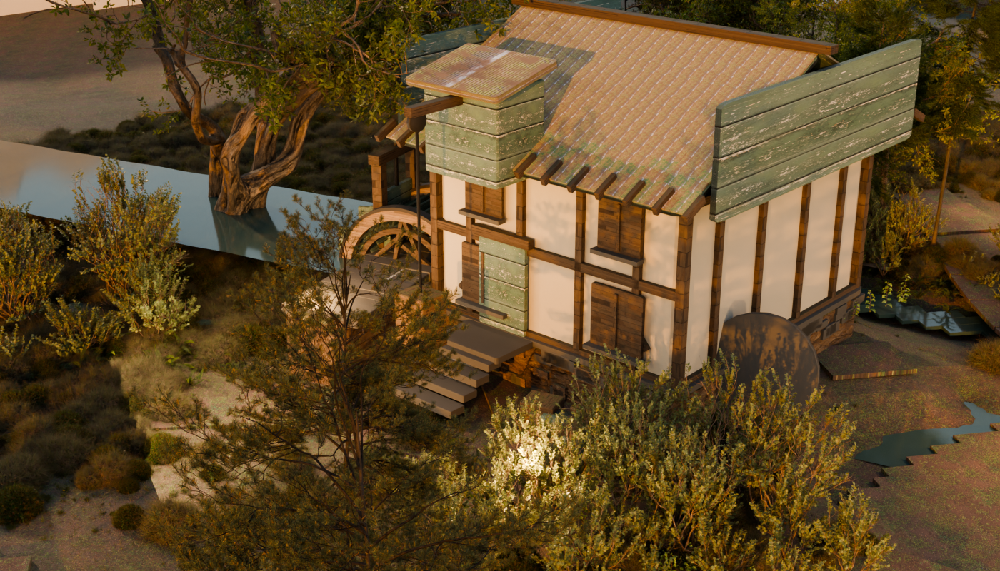
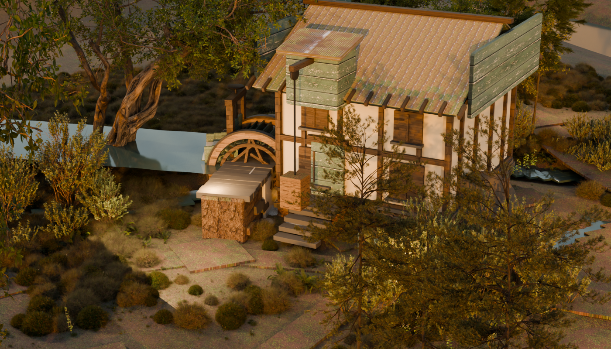
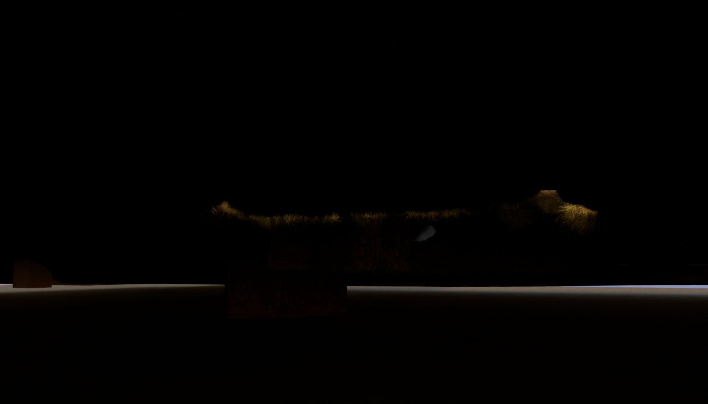

Left: probe2-*.png, the hand-authored throwaway the user ratified as the quality bar.
Right: dress1-*.png, the same corner produced by tools/emb_dress.py — derived from
emberbrook.map.json + the ratified blockout's own as-built placements + the asset library,
deterministic, gated. Same golden legibility key, same three framings mapped through the mill's
own local frame so the cameras stand in the same place relative to the wheel.





| Thing | probe2 (bar) | dress1 (pilot) | Why |
|---|---|---|---|
| Terrain | invented ground_z(), a clean brook along +x |
the blockout's own emb_ground_valley |
the town's real ground under the real stamped brook, which meanders |
| Mill placement | authored at (10.6, 4.9) from its dam | ON the map's watermill landmark, 9.2 m downstream of the dam and 0.9 m off the leat axis | the map is the authority; the fit is measured and reported, not shopped for |
| Trees | 16 hero placements chosen by eye | the blockout's 31 searched placements, filtered to the region | species read off each crown's own topology; lane clearances re-asserted on the dressed asset |
| Boundaries | one authored dry-stone run | the stamped 29%-partial fragments, re-rendered per household on that household's crc | a boundary is the blockout's; dressing only changes what it is made of |
| Groundcover | fractal density, trodden at an authored door | same field, trodden at the town's OWN treads and doorsteps | bare ground appears where the walk network actually is |
| Slim canopies | none — the class did not exist | broadleaf scans stretched 0.62/0.62/1.18 | manifest gap: canopy_slim has no asset. Lane A owns it. 15 of the 31 village trees are this class. |
These three frames are NOT the current build and I am not asking for approval of them. They were rendered from the engine as it stood before two later rounds of fixes, and they carry two defects I have since traced and closed:
A NEW DEFECT IS OPEN AND BLOCKS THE COMPARISON. After swapping to lane A's shipped library, the ground renders a hard-edged white-and-black angular pattern across the whole corner. Established: the textures load (2048², valid JPEG, correct paths); it is not the grass scatter (it persists with the scatter at 200 clumps); it is not a missing image. Unresolved — so the current build cannot be judged against the style bar either.
What IS sound in these frames: the mill building itself — timber frame, laid shingle courses with mossy eaves, the lucam and hoist, the plinth rubble, the stone steps — and in frame b the 4.4 m breastshot wheel in its pit. Determinism: two runs, identical content digest. Double-instancing gate: one representation per asset.